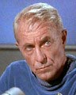
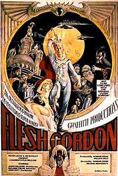
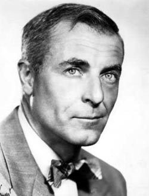

|
por Rosimeire Anne
 Magro esquelético, de olhos azuis e cabelo grisalho, tem cara de vovô simpático. Ele era John Hoysradt, mais conhecido como John Hoyt, famoso entre os fãs de
Jornada por seu papel no piloto "The
Cage", interpretando o dr. Phillip Boyce.
John nasceu em 5 de outubro de 1905, em Bronxville, Nova York. Cursou a Universidade de Yale.
Hoyt era comediante de clubes noturnos e professor de história e teatro. Começou a participar de filmes depois de um considerável trabalho de estágio com o Mercury Theater de Orson Welles, em 1937. Ele ficou com Welles até juntar-se ao Exército em 1945.
 Depois da guerra, o grisalho de olhar fatal construiu uma reputação no cinema como um dos atores de mais peso no meio, especialmente lembrado pelo notável policial por ele interpretado em "Desiree", de 1954. Quase sempre associado com filmes "profundos", Hoyt surpreendeu muitos de seus amigos profissionais quando concordou em co-estrelar na paródia pornográfica "Flesh Gordon"; aqueles que eram mais íntimos dele, entretanto, sabiam que Hoyt curtiu a boemia por toda sua vida, especialmente durante suas férias freqüentemente tiradas em colônias de nudistas.
Os fãs de TV da geração dos anos 80 lembrarão dele como o vovô Stanley Kanisky na série "Gimme a Break!"; aqueles que tiverem maior memória talvez lembrem dele como o doutor que disse a Ben Gazzara que ele tinha apenas dois anos de vida no piloto da série dos anos 60 "Run For Your Life". Sua participação em
Jornada não passa de uma nota de rodapé na extensa filmografia do ator.
Ator em mais de 75 filmes, Hoyt por várias vezes interpretou cientistas, aristocratas e variados papéis de autoridade, assim como sua justa quota de professores malucos.

Hoyt faleceu em 15 de setembro de 1991. Assim como John Wayne, Susan Hayward, Agnes Moorhead e Pedro Armendariz, todos colegas de atuação de John no filme "The Conqueror", ele morreu de câncer (de pulmão, no caso dele).
Filmografia
1985 - Procura-se Susan Desesperadamente
1980 - In Search of Historic Jesus
1978 - TheGreat Ride
1974 - Flesh Gordon - Professor Gordon
1968 - Panic in the City
1966 - Duel at Diablo - Chefe Apache Chata
1965 - Matar ou Cair - Mayor Osborne
1965 - Operation C.I.A. - Wells
1965 - Young Dillinger - Dr. Wilson
1965 - Sete Noites de Agonia - Carl Vickers
1964 - A Gaiola de Vidro - Lt. Max Westerman
1964 - Os Viajantes do Tempo - Dr. Varno
1963 - X - Dr. Willard Benson
1963 - Cleopatra - Cassius
1962 - Merrill's Marauders - Gen. Joseph Stilwell
1960 - Spartacus - Caius
1959 - Riot in Juvenile Prison - Col. Ernest Walton
1959 - Never So Few - Col. Reed
1959 - Curse of the Undead - Dr. John Carter
1958 - Attack of the Puppet People - Mr. Franz
1958 - The Beast of Budapest - Prof. Ernst Tolnai
1957 - Baby Face Nelson - Samuel Parker
1957 - God Is My Partner - Gordon Palmer
1957 - Sierra Stranger - Cherife
1956 - Wetbacks - Steve Bodine
1956 - Death of a Scoundrel - Mr. O'Hara
1956 - The Come On - Harold King,
1956 - Mohawk - Butler
1956 - The Conqueror - Shaman
1956 - Forever, Darling - Bill Finlay
1955 - Moonfleet - Magistrate Maskew
1955 - The Purple Mask - Rochet
1955 - Trial - Ralph Castillo
1955 - The Girl in the Red Velvet Swing - William Travers Jerome
1955 - Blackboard Jungle - Mr. Warneke
1955 - The Big Combo - Nils Dreyer
1954 - Desirée - Talleyrand
1954 - The Student Prince - Prime Minister
1954 - Casanova's Big Night - Maggiorin
1954 - Sins of Jezebel - Elijah
1954 - Julius Caesar - Decius Brutus
1952 - The Black Castle - Count Steiken
1952 - Androcles and the Lion - Cato
1952 - Loan Shark - Phillips
1951 - The Desert Fox: The Story of Rommel (não-creditado) - Wilhelm Keitel
1951 - Inside Straight - Flutey Johnson
1951 - New Mexico - Sgt. Harrison
1951 - Quebec - Father Antoine
1951 - Lost Continent - Michael Rostov
1951 - When Worlds Collide - Sydney Stanton
1950 - The Company She Keeps - Judge Kendall
1950 - The Lawless - Ed Ferguson
1950 - Outside the Wall - Stoker e Jack Bernard
1949 - The Great Dan Patch - Ben Lathrop
1949 - The Lady Gambles - Dr. Rojac
1949 - Everybody Does It - Wilkins
1949 - Trapped - Agent John Downey, alias Johnny Hackett
1949 - The Bribe - Gibbs
1948 - The Decision of Christopher Blake - Mr. Caldwell
1948 - Sealed Verdict - General Otto Steigmann
1948 - Winter Meeting - Stacy Grant
1948 - To the Ends of the Earth - Bennett
1947 - Brute Force - Spencer
1947 - The Unfaithful - Detective Lt. Reynolds
1947 - My Favorite Brunette - Dr. Lundau
1946 - O.S.S. - Col. Paul Meister
Séries de TV e telefilmes
1982 - "Aliens From Another Planet" - Líder Alienígena
1981 - "Gimme a Break!" - Stanley 'Grandpa' Kanisky (1982-1987)
1978 - "The Winds of Kitty Hawk" - Professor Samuel Langley
1977 - "Nero Wolfe" - Hewitt
1977 - "The Rhinemann Exchange" (minissérie) - Cientista Alemão
1975 - "The Turning Point of Jim Malloy" - Harry Longden
1974 - "Planet of the Apes" - Barlow (Episódios 2 & 9)
1972 - "Return to Peyton Place" - Martin Peyton (1972-1974)
1972 - "Welcome Home, Johnny Bristol" - Ministro
1970 - "The Intruders" - Appleton
1966 - "Fame Is the Name of the Game" - Larkin
1966 - Jornada nas Estrelas, em "The Menagerie" - Dr. Phillip Boyce
1965 - "Memorandum for a Spy" - Lowell Ritchards
1965 - Jornada nas Estrelas, em "The Cage" - Dr. Phillip Boyce
1964 - "Tom, Dick and Mary" - Dr. Krevoy
1962 - "Alcatraz Express" - Capone's Attorney
1959 - "The Scarface Mob"
1959 - "Staccato"
1954 - "The Adventures of Rin Tin Tin" - Col. Barker (1954-)
|